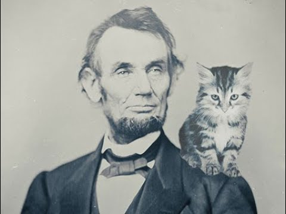
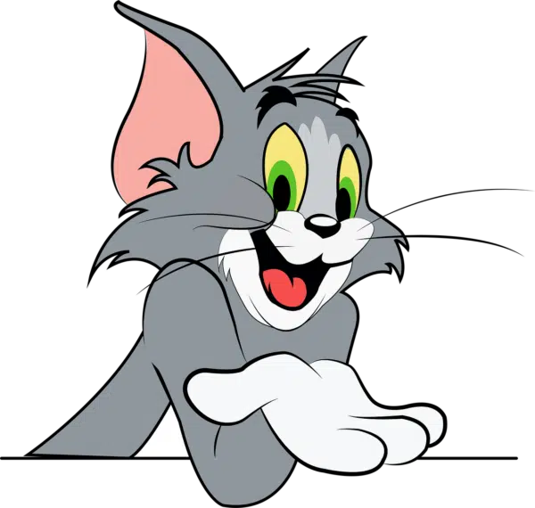
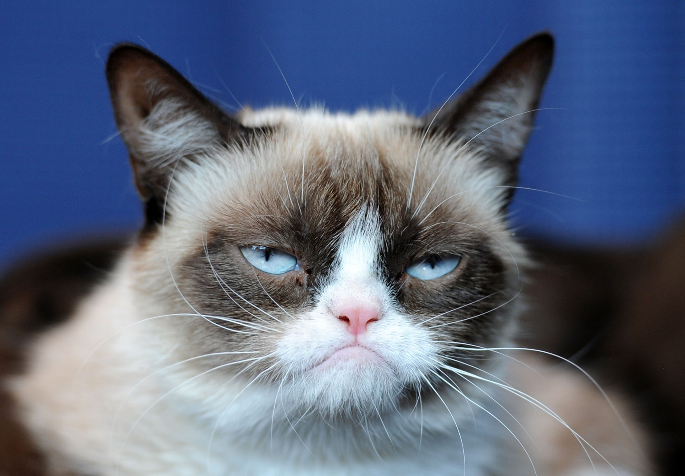
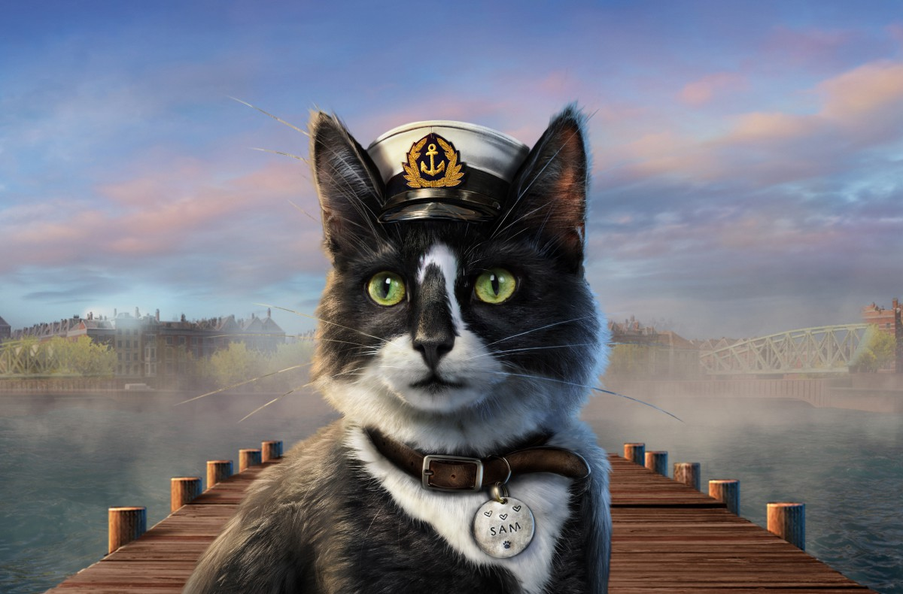
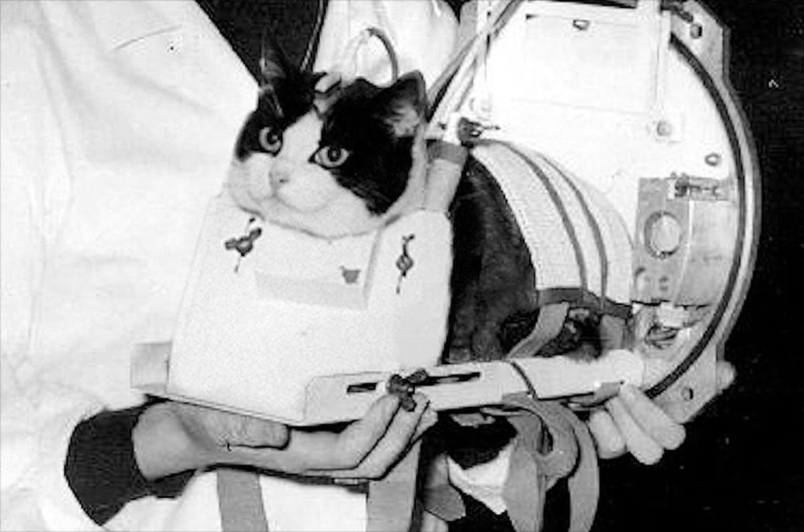
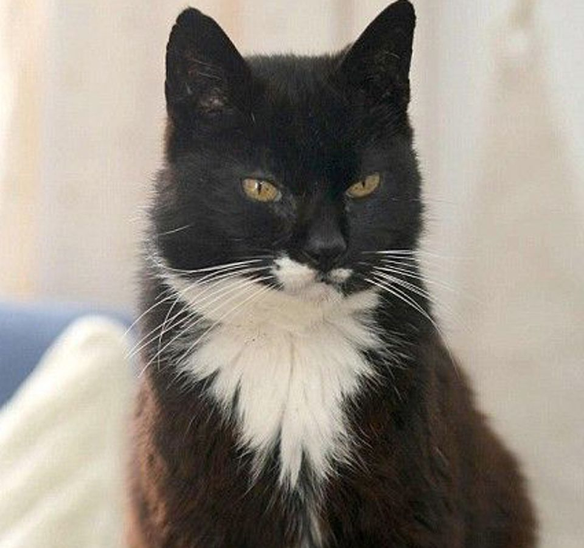
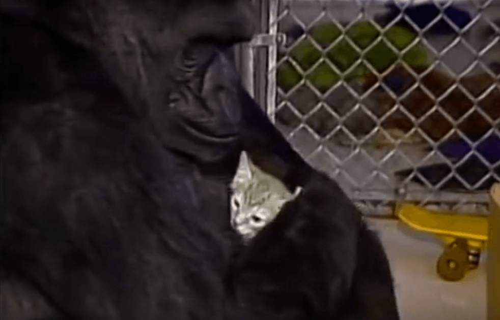

Genellikle evcil kedi veya ev kedisi olarak adlandırılan kedi
(Felis catus), evcilleştirilmiş küçük bir etobur memelidir.
Felidae familyasının evcilleştirilmiş tek türüdür. Arkeoloji
ve genetik alanındaki son gelişmeler, kedinin
evcilleştirilmesinin MÖ 7500 civarında Yakın Doğu'da
gerçekleştiğini göstermiştir. Yaygın olarak ev ve çiftlik
kedisi olarak beslenir, ancak insan temasından kaçınan vahşi
bir kedi olarak da serbestçe dolaşır. İnsanlar tarafından
arkadaşlık ve haşarat öldürme yeteneği nedeniyle değer
görmektedir. Geri çekilebilir pençeleri, fare ve sıçan gibi
küçük avları öldürmek için uyarlanmıştır. Güçlü, esnek bir
vücuda, hızlı reflekslere, keskin dişlere sahiptir ve gece
görüşü ve koku alma duyusu iyi gelişmiştir. Sosyal bir türdür,
ancak yalnız bir avcı ve krepusküler bir avcıdır. Kedi
iletişimi miyavlama, mırlama, trilleme, tıslama, hırlama ve
homurdanma gibi seslerin yanı sıra kedi beden dilini de
içerir. Küçük memeliler tarafından çıkarılanlar gibi insan
kulağı için çok zayıf veya çok yüksek frekanslı sesleri
duyabilir. Ayrıca feromon salgılar ve algılar.
Genellikle evcil kedi veya ev kedisi olarak adlandırılan
kedi (Felis catus), evcilleştirilmiş küçük bir etobur
memelidir. Felidae familyasının evcilleştirilmiş tek
türüdür. Arkeoloji ve genetik alanındaki son gelişmeler,
kedinin evcilleştirilmesinin MÖ 7500 civarında Yakın Doğu'da
gerçekleştiğini göstermiştir. Yaygın olarak ev ve çiftlik
kedisi olarak beslenir, ancak insan temasından kaçınan vahşi
bir kedi olarak da serbestçe dolaşır. İnsanlar tarafından
arkadaşlık ve haşarat öldürme yeteneği nedeniyle değer
görmektedir. Geri çekilebilir pençeleri, fare ve sıçan gibi
küçük avları öldürmek için uyarlanmıştır. Güçlü, esnek bir
vücuda, hızlı reflekslere, keskin dişlere sahiptir ve gece
görüşü ve koku alma duyusu iyi gelişmiştir. Sosyal bir
türdür, ancak yalnız bir avcı ve krepusküler bir avcıdır.
Kedi iletişimi miyavlama, mırlama, trilleme, tıslama,
hırlama ve homurdanma gibi seslerin yanı sıra kedi beden
dilini de içerir. Küçük memeliler tarafından çıkarılanlar
gibi insan kulağı için çok zayıf veya çok yüksek frekanslı
sesleri duyabilir. Ayrıca feromon salgılar ve algılar.

Dişi evcil kediler, ılıman bölgelerde ilkbahardan sonbaharın sonlarına
kadar, ekvatoral bölgelerde ise yıl boyunca yavrulayabilir ve yavru
büyüklükleri genellikle iki ila beş yavru arasında değişir. Evcil
kediler yetiştirilir ve kedi fantezisi olarak bilinen bir hobi olan
tescilli pedigreed kediler olarak etkinliklerde gösterilir. Kedilerin
popülasyon kontrolü kısırlaştırma ile sağlanabilir, ancak kedilerin
çoğalması ve evcil hayvanların terk edilmesi dünya çapında çok sayıda
yabani kedinin ortaya çıkmasına neden olmuş ve kuş, memeli ve sürüngen
türlerinin yok olmasına katkıda bulunmuştur. 2017 yılı itibariyle
evcil kedi, 95,6 milyon kedinin sahiplenildiği ve yaklaşık 42 milyon
hanenin en az bir kediye sahip olduğu Amerika Birleşik Devletleri'nde
en popüler ikinci evcil hayvandır. Birleşik Krallık'ta yetişkinlerin
%26'sının bir kedisi vardır ve 2020 itibariyle tahmini evcil kedi
nüfusu 10,9 milyondur. 2021 yılı itibariyle dünyada 220 milyon sahipli
ve 480 milyon sahipsiz kedi olduğu tahmin edilmektedir.
Tarihin en tanınmış kedileri

Tom The Cat
Keyboard Cat
Klavye Kedisi video tabanlı bir internet meme'idir. Orijinal
hali 1984 yılında Charlie Schmidt tarafından yapılan ve kedisi
Fatso'nun neşeli bir melodi eşliğinde (Schmidt tarafından
kamera dışında manipüle edilmiş olsa da) bir müzik klavyesi
çaldığı bir videoydu.

Grumpy Cat
Huysuz Kedi lakaplı Tardar Sauce, Amerikalı bir internet
ünlüsü kediydi. Alt ısırığı ve kedi cüceliğinin neden olduğu
kalıcı “huysuz” yüz görünümü ile tanınıyordu

Unsinkable Sam
Oscar, İkinci Dünya Savaşı sırasında hem Kriegsmarine hem de
Kraliyet Donanması'nda görev yapmış ve batan üç gemiden sağ
kurtulduğu iddia edilen bir gemi kedisiydi.

Félicette
uzaya fırlatılan ilk kedi

Creme Puff
Guinness Dünya Rekorları'nın 2010 baskısına göre, 38 yıl 3
günlükken öldüğünde şimdiye kadar kaydedilen en yaşlı kediydi.
Garfield
Garfield, Jim Davis tarafından yaratılan bir Amerikan çizgi
romanıdır.

All Ball
Bu küçük kedicik, Goril Koko'nun yavru kediyle arkadaş
olmasıyla ünlendi ve Koko, yavru kedi gorile küçük bir topu
hatırlattığı için ona “All Ball” adını verdi. Trajik bir
şekilde, yavru kedi bir tomruk kamyonu tarafından öldürüldü ve
Koko'yu kederli bir dünyaya gönderdi.
Bizimle İletişime Geçin
Bizimle her zaman iletişime geçebilirsiniz. Müşteri
Hizmetlerimiz Pazartesi-Cuma 9:00 -8:00 ve Cumartesi-Pazar
10:00 -6:00 (GMT +3) saatleri arasında hizmet vermektedir.
Sizden haber almak için sabırsızlanıyoruz!